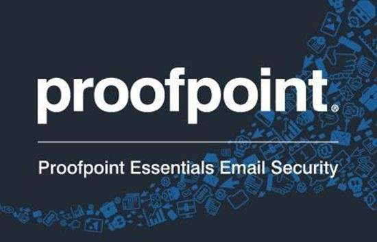
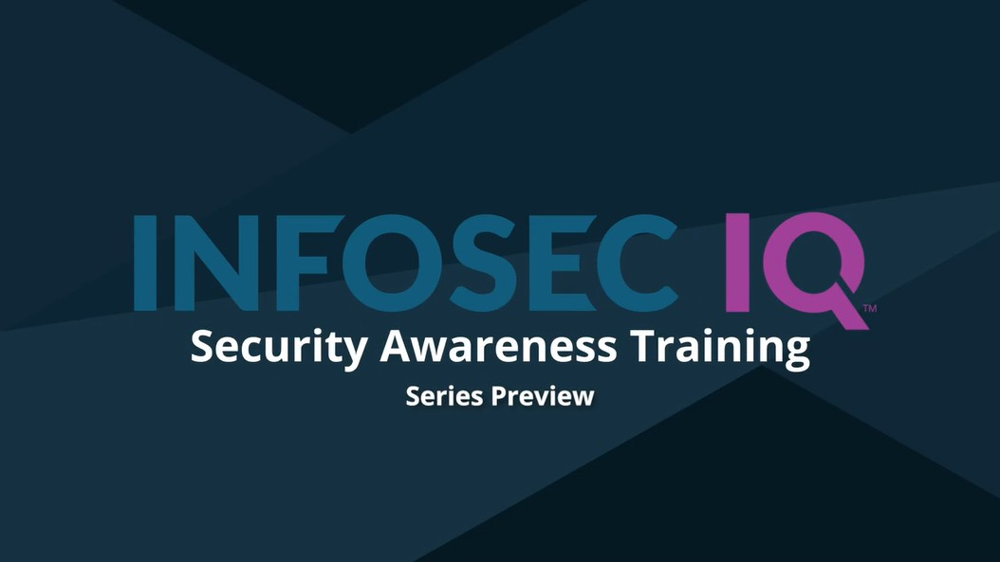

PR02 - 1
Datos Generales
Institución: Universidad Politécnica de San Luis Potosí
Materia: CNO V – Seguridad Informática
Alumno: López Castro Diego – 182032
Profesor: Mtro. Servando López Contreras
Fecha de entrega: 06 – Marzo – 2026
Introducción contextual
La información, especialmente la de carácter personal o confidencial, se ha convertido en uno de los recursos más valiosos dentro de los entornos digitales
y organizacionales. En este contexto, el phishing se ha consolidado como una de las principales técnicas utilizadas por ciberdelincuentes para obtener datos
sensibles mediante mensajes fraudulentos que se hacen pasar por entidades legítimas. Este tipo de ataque se apoya en la ingeniería social, explotando principalmente
el factor humano, por lo que la concienciación y capacitación de los usuarios resultan fundamentales para fortalecer la seguridad.
La presente investigación tiene como objetivo diseñar, implementar y evaluar una simulación educativa de phishing basada en el análisis comparativo de diversas plataformas especializadas,
con el fin de medir la capacidad de los usuarios para reconocer amenazas de ingeniería social y reflexionar sobre la gestión del riesgo humano en ciberseguridad. Para ello, se analizan
herramientas como Hoxhunt, Proofpoint, KnowBe4, Cofense, Phished, NINJIO, Mimecast e Infosec IQ, considerando sus capacidades técnicas, métricas de evaluación y enfoques de entrenamiento orientados
al fortalecimiento de la cultura de seguridad.
Ficha técnica: Hoxhunt
Descripción
Hoxhunt es una plataforma de simulación de phishing que también proporciona un
entrenamiento adaptativo en el área de la ciberseguridad, que se enfoca
principalmente en la definición de “Human Risk Management”, es decir, el proceso
de identificar, analizar y reducir los riesgos de seguridad que se derivan del
comportamiento tanto de los empleados como de terceras personas.
Su foco principal se basa en modificar el comportamiento de los usuarios a través
de simulaciones personalizadas y entrenamientos dinámicos basado en escenarios
reales.
Capacidades técnicas
Hoxhunt utiliza simulaciones que se adaptan al nivel de riesgo con el que trabaje
cada usuario en ella, simulaciones que abarcan ciertos tópicos de ingeniería social,
siendo los más relevantes las simulaciones de QR-phishing, el phishing por correo
electrónico, el SMS phishing (Smishing), simulaciones de archivos adjuntos con
objetivos maliciosos, etc.
La plataforma también puede integrarse directamente en los clientes de correo,
como Gmail u Outlook, usando un botón llamado “Report phishing”, mismo que
permite a los usuarios de la misma la posibilidad de reportar correos sospechosos
y activar procesos de análisis en el Centro de Operaciones de Seguridad (SOC por
sus siglas en inglés), mismo que consiste en un equipo de profesionales en el área
de la ciberseguridad, cuya función es la de supervisar, detectar y responder a
amenazas en tiempo real.
Métricas de medición
• Click rate: Porcentaje de usuarios que hacen clic en un enlace de phishing
durante una simulación.
• Reporting rate: Porcentaje de usuarios que identifican y reportan correctamente
un correo sospechoso. Se considera un indicador clave del cambio de
comportamiento y se recomienda alcanzar al menos 70 % de reporting rate en
programas maduros.
• Miss rate: Usuarios que no interactúan con el correo (ni reportan ni hacen clic),
lo que indica una zona de riesgo invisible.
• Time-to-report: Tiempo que tarda un usuario en reportar un phishing después
de recibirlo.
• Detection rate: Porcentaje de phishing identificados correctamente.
• User risk score: Puntuación de riesgo individual basada en comportamiento.
Enfoques de entrenamiento
El enfoque principal de los entrenamientos proprocionados por Hoxhun radica en
las micro-lecciones inmediatas tras ocurrir erros, el aprendizaje personalizado que
se adapta a las condiciones de cada usuario, como se mencionó anteriormente, y
la gamificación, es decir, técnicas de aprendizaje y motivación que fomentan el
aprendizaje en entornos no tan lúdicos.
Controles éticos
Los controles éticos que toma la plataforma se basan en la prevención de campañas
de phishing con un grado de agresividad considerable, lo que a su vez llega a
conseguir la reducción del estigma que se tiene asociado a los errores de las
personas en el tema de la seguridad, y finalmente, prioriza refuerzos positivos y un
aprendizaje progresivo, logrando que los usuarios logren comprender los temas de
forma satisfactoria.
Ficha técnica: Proofpoint
Descripción
Proofpoint es una plataforma de concienciación en ciberseguridad y simulación de
phishing orientada principalmente a entornos corporativos. Su objetivo es fortalecer
la seguridad organizacional mediante la reducción del denominado “human risk”, es
decir, el riesgo que representa el comportamiento de los usuarios frente a amenazas
de ingeniería social. La plataforma forma parte del ecosistema de seguridad
desarrollado por la empresa Proofpoint Inc., especializada en soluciones de
protección de correo electrónico, prevención de pérdida de datos y análisis de
amenazas.
El funcionamiento de la plataforma se basa en la ejecución de campañas de
simulación de phishing y programas de entrenamiento que utilizan inteligencia de
amenazas reales para recrear escenarios similares a los ataques que actualmente
circulan en internet. De esta forma, las organizaciones pueden evaluar la capacidad
de sus empleados para reconocer intentos de fraude digital y mejorar
progresivamente su nivel de concienciación en seguridad.
Capacidades técnicas
Proofpoint proporciona un sistema de simulación de phishing que integra una
biblioteca extensa de plantillas diseñadas para replicar ataques reales detectados
por sus sistemas de inteligencia de amenazas. Estas plantillas permiten construir
campañas que imitan técnicas utilizadas por actores maliciosos en entornos reales,
lo que contribuye a evaluar de forma más precisa el comportamiento de los usuarios
frente a intentos de ingeniería social. Las simulaciones pueden representar diversos
vectores de ataque, entre los que se incluyen correos electrónicos fraudulentos que
intentan engañar al usuario mediante mensajes aparentemente legítimos, páginas
falsas de autenticación que buscan capturar credenciales de acceso, ataques de
suplantación de identidad corporativa en los que se imitan comunicaciones de
directivos o instituciones confiables, así como campañas de spear phishing, es decir,
ataques dirigidos específicamente a determinados usuarios o grupos dentro de una
organización con base en su rol o nivel de acceso.
Una de las características principales es la integración con la herramienta
PhishAlarm, un complemento que se instala en clientes de correo electrónico como
Microsoft Outlook o Microsoft 365, permitiendo a los usuarios reportar correos
sospechosos directamente al equipo de seguridad de la organización.
Cuando un usuario reporta un mensaje, este puede ser analizado automáticamente
mediante sistemas de inteligencia de amenazas o enviado al Centro de Operaciones
de Seguridad (SOC, Security Operations Center) de la organización, donde
especialistas en ciberseguridad evalúan la posible amenaza y determinan las
acciones de respuesta.
Métricas de medición
Las métricas de medición utilizadas por Proofpoint buscan evaluar tanto el
comportamiento del usuario como el progreso del programa de concienciación:
• Click rate: Porcentaje de usuarios que interactúan con enlaces maliciosos en
una simulación de phishing.
• Reporting rate: Porcentaje de usuarios que reportan correctamente el intento
de phishing.
• Resilience factor: Indicador que compara el número de reportes correctos
frente al número de clics, permitiendo evaluar el nivel de resiliencia de la
organización frente a ataques de ingeniería social.
• Knowledge score: Puntuación obtenida en evaluaciones de conocimiento
relacionadas con los contenidos de formación en ciberseguridad.
Enfoques de entrenamiento
El modelo de entrenamiento implementado por Proofpoint se basa en un enfoque
progresivo orientado al desarrollo continuo de la conciencia en ciberseguridad
dentro de las organizaciones. Este enfoque combina distintos componentes
formativos que buscan fortalecer gradualmente la capacidad de los usuarios para
reconocer y responder ante amenazas de ingeniería social. En primer lugar, la
plataforma incorpora módulos educativos especializados que explican los
principales tipos de amenazas de seguridad informática, permitiendo a los usuarios
comprender cómo operan los ataques y cuáles son sus indicadores más comunes.
De manera complementaria, el sistema ejecuta simulaciones periódicas de phishing
que reproducen escenarios de ataque realistas, con el objetivo de evaluar el
comportamiento de los usuarios frente a intentos de fraude digital y reforzar el
aprendizaje adquirido durante la formación teórica. Asimismo, la plataforma incluye
evaluaciones de conocimiento que permiten medir el nivel de comprensión de los
contenidos de seguridad impartidos durante el programa de capacitación.
Finalmente, estas actividades se integran dentro de campañas de concienciación
organizacional más amplias, cuyo propósito es promover una cultura de seguridad
dentro de la empresa, fomentando prácticas responsables en el manejo de la
información y en el uso de los sistemas tecnológicos.
Controles éticos
La plataforma incorpora mecanismos que permiten ajustar el nivel de complejidad
de las simulaciones para evitar situaciones que puedan generar estrés o afectar la
confianza de los empleados. Asimismo, las métricas se utilizan principalmente para
mejorar los programas de capacitación y no para sancionar a los usuarios que
cometen errores durante las simulaciones.

Figura 2 Proofpoint.
Ficha técnica: KnowBe4
Descripción
KnowBe4 es una de las plataformas más reconocidas en el ámbito de la
concienciación en ciberseguridad y simulación de phishing. Fue diseñada para
ayudar a las organizaciones a gestionar el riesgo humano mediante programas de
capacitación continua y campañas de simulación que replican ataques de ingeniería
social reales.
La plataforma se basa en la premisa de que la mayoría de los incidentes de
seguridad informática se originan en errores humanos, por lo que el entrenamiento
constante de los usuarios es fundamental para reducir la superficie de ataque dentro
de una organización.
Capacidades técnicas
KnowBe4 ofrece un entorno integral que combina la simulación de ataques de
phishing con una amplia biblioteca de recursos educativos orientados a la
concienciación en ciberseguridad. Dentro de sus capacidades técnicas, la
plataforma permite ejecutar campañas de phishing automatizadas que se
distribuyen de manera periódica entre los usuarios de una organización con el fin
de evaluar su nivel de susceptibilidad ante este tipo de ataques. Asimismo, el
sistema permite diseñar campañas personalizadas de spear phishing, dirigidas a
perfiles específicos dentro de la organización, con el objetivo de simular escenarios
de ataque más realistas. Además, la plataforma incluye simulaciones que emplean
archivos adjuntos maliciosos, los cuales buscan recrear métodos comunes
utilizados por los atacantes para distribuir software malicioso, así como
simulaciones relacionadas con dispositivos USB infectados, un tipo de ataque
basado en ingeniería social en el que los usuarios pueden conectar dispositivos
externos comprometidos que permiten la ejecución de código malicioso dentro de
la red corporativa.
La plataforma también permite integrarse con sistemas de gestión de identidad
como Active Directory (AD), una tecnología desarrollada por Microsoft que permite
administrar usuarios y permisos dentro de redes corporativas.
Métricas de medición
KnowBe4 utiliza un conjunto de métricas diseñadas para evaluar la susceptibilidad
de los usuarios ante ataques de phishing:
• Phish-prone percentage: Porcentaje de usuarios vulnerables a ataques de
phishing dentro de una organización.
• Click rate: Porcentaje de usuarios que interactúan con enlaces fraudulentos.
• Credential submission rate: Porcentaje de usuarios que introducen
credenciales en páginas falsas durante una simulación.
• Risk score organizacional: Indicador compuesto que mide el nivel de riesgo
humano dentro de la organización.
Enfoques de entrenamiento
El enfoque educativo de KnowBe4 se basa en un modelo de aprendizaje continuo,
que combina simulaciones periódicas con contenidos educativos interactivos,
incluyendo videos, cursos y ejercicios prácticos.
Cuando un usuario falla en una simulación, la plataforma puede activar
automáticamente un micro-entrenamiento correctivo, con el objetivo de reforzar el
aprendizaje en el momento en que ocurre el error.
Controles éticos
KnowBe4 permite configurar las campañas de simulación para evitar prácticas
excesivamente agresivas o manipulativas. Además, promueve el uso de métricas
agregadas para evaluar el desempeño organizacional, evitando la estigmatización
individual de los usuarios.

Figura 3 KnowBe4.
Ficha técnica: Cofense
Descripción
Cofense es una plataforma especializada en defensa contra phishing y gestión de
amenazas basadas en reportes de usuarios. Su enfoque se centra en convertir a
los empleados en sensores activos de seguridad dentro de la organización.
La empresa desarrolló originalmente la solución PhishMe, considerada una de las
primeras plataformas comerciales de simulación de phishing.
Capacidades técnicas
La plataforma de Cofense permite ejecutar campañas de simulación de phishing
diseñadas para reproducir ataques observados en múltiples organizaciones
alrededor del mundo, lo que facilita recrear escenarios de amenaza basados en
incidentes reales. Estas simulaciones pueden incluir diferentes modalidades de
ingeniería social, como ataques de phishing tradicionales a través de correo
electrónico, campañas de smishing, que es una variante del phishing que utiliza
mensajes de texto o servicios de mensajería móvil para engañar a los usuarios, y
campañas dirigidas de ingeniería social que buscan comprometer a usuarios
específicos dentro de la organización.
Uno de los componentes más relevantes de la plataforma es el botón “Report
Phishing”, una herramienta que puede integrarse directamente en los clientes de
correo electrónico utilizados por los empleados. Este mecanismo permite que los
usuarios reporten de manera inmediata correos sospechosos al equipo de
seguridad de la organización. Los reportes generados a partir de esta interacción
son analizados mediante sistemas automatizados que clasifican y priorizan las
posibles amenazas. Además, esta información puede integrarse con herramientas
de seguridad como los sistemas SIEM (Security Information and Event
Management), los cuales permiten recopilar, correlacionar y analizar eventos de
seguridad provenientes de múltiples dispositivos y aplicaciones dentro de una
infraestructura tecnológica, facilitando así la detección temprana de incidentes de
seguridad.
Métricas de medición
Las métricas utilizadas por Cofense incluyen:
• Click rate: Porcentaje de usuarios que hacen clic en enlaces incluidos dentro de
un mensaje de phishing simulado.
• Reporting rate: Porcentaje de usuarios que identifican correctamente un
mensaje sospechoso.
• Threat detection rate: Porcentaje de amenazas reales identificadas gracias a
los reportes de los usuarios.
• Response time: Tiempo que tarda la organización en responder a un reporte de
phishing.
Enfoques de entrenamiento
El modelo de entrenamiento se basa en la participación activa de los usuarios en la
detección de amenazas. A través de simulaciones periódicas y programas de
formación, los empleados aprenden a identificar indicadores de phishing y
reportarlos adecuadamente.
Controles éticos
La plataforma enfatiza el aprendizaje colaborativo y evita el uso de simulaciones
diseñadas únicamente para “engañar” a los usuarios. En cambio, busca fomentar
una cultura de seguridad basada en la colaboración entre empleados y equipos de
seguridad.
Ficha técnica: Phished
Descripción
Phished es una plataforma moderna de concienciación en ciberseguridad que utiliza
inteligencia artificial para evaluar el comportamiento de los usuarios frente a ataques
de phishing.
Su enfoque principal consiste en analizar continuamente el comportamiento de los
empleados y adaptar las campañas de entrenamiento de acuerdo con su nivel de
riesgo.
Capacidades técnicas
La plataforma utiliza algoritmos de aprendizaje automático para analizar patrones
de comportamiento y generar simulaciones personalizadas. Esto permite que cada
usuario reciba entrenamientos adaptados a su perfil de riesgo. Phished también
puede integrarse con plataformas de correo corporativo y sistemas de autenticación
empresarial.
Métricas de medición
Entre las métricas principales se encuentran:
• Behavioral Risk Score: Indicador que mide el nivel de riesgo asociado al
comportamiento de cada usuario.
• Click rate: Porcentaje de usuarios que hacen clic en enlaces incluidos dentro de
un mensaje de phishing simulado.
• Reporting rate: Porcentaje de usuarios que identifican correctamente un
mensaje sospechoso y lo reportan.
• Training engagement rate: Nivel de participación de los usuarios en las
actividades de entrenamiento.
Enfoques de entrenamiento
El enfoque educativo se basa en un modelo de aprendizaje adaptativo, donde la
plataforma modifica el contenido y la frecuencia de las simulaciones en función del
comportamiento del usuario.
Controles éticos
La plataforma reduce la frecuencia de simulaciones para usuarios con bajo nivel de
riesgo, evitando generar saturación o estrés innecesario en los empleados.
Ficha técnica: NINJIO
Descripción
La plataforma NINJIO es una solución de concienciación en ciberseguridad que se
distingue por su enfoque educativo basado en micro-aprendizaje y en el uso de
contenido audiovisual interactivo. Fue desarrollada por la empresa NINJIO LLC, con
el propósito de fortalecer la cultura de seguridad dentro de las organizaciones
mediante métodos de aprendizaje breves, dinámicos y fáciles de comprender para
usuarios no técnicos.
NINJIO utiliza animaciones inspiradas en incidentes reales de ciberseguridad, los
cuales presentan situaciones comunes relacionadas con ataques como phishing,
robo de credenciales, uso indebido de información o manipulación mediante
ingeniería social. Cada episodio muestra las consecuencias de estos incidentes y
enseña a los usuarios a reconocer señales de advertencia y adoptar prácticas
seguras. Este enfoque busca mejorar la retención del conocimiento y fomentar
cambios de comportamiento en los empleados, permitiendo que las organizaciones
reduzcan el riesgo humano asociado a amenazas de seguridad informática.
Capacidades técnicas
El sistema incluye simulaciones de phishing combinadas con contenidos educativos
en formato audiovisual. Los episodios están diseñados para explicar conceptos de
seguridad de forma accesible y facilitar la retención del conocimiento.
La plataforma también puede integrarse con sistemas de autenticación empresarial
mediante Single Sign-On (SSO), un mecanismo de autenticación que permite a los
usuarios acceder a múltiples aplicaciones utilizando una única credencial.
Métricas de medición
• Click rate: Permite medir el nivel de susceptibilidad de los usuarios frente a
ataques de ingeniería social.
• Reporting rate: Porcentaje de usuarios que identifican correctamente un
mensaje sospechoso.
• Engagement rate: Nivel de interacción de los usuarios con los contenidos
educativos.
Enfoques de entrenamiento
El modelo educativo se basa en micro-lecciones breves que se presentan
periódicamente a los usuarios. Este enfoque busca mejorar la retención del
conocimiento sin interrumpir significativamente las actividades laborales.
Controles éticos
El uso de contenido educativo narrativo reduce la presión sobre los usuarios y
promueve el aprendizaje en un entorno más accesible y menos punitivo.
Ficha técnica: Mimecast
Descripción
Mimecast es una empresa especializada en seguridad del correo electrónico que
también ofrece soluciones de concienciación en ciberseguridad y simulación de
phishing.
Su plataforma forma parte de un ecosistema más amplio de seguridad diseñado
para proteger las comunicaciones empresariales.
Capacidades técnicas
Mimecast permite ejecutar simulaciones de phishing que replican ataques comunes
dirigidos a entornos corporativos. Estas simulaciones pueden incluir correos
fraudulentos que imitan notificaciones de servicios empresariales o instituciones
financieras.
La plataforma se integra directamente con el sistema de seguridad de correo
electrónico de Mimecast, lo que permite correlacionar los resultados de las
simulaciones con eventos de seguridad reales.
Métricas de medición
• Risk score por usuario: Porcentaje del nivel de riesgo asociado al
comportamiento de un usuario frente a amenazas de ingeniería social.
• Click rate: Porcentaje de usuarios que hacen clic en enlaces incluidos dentro de
un mensaje de phishing simulado.
• Reporting rate: Porcentaje de usuarios que identifican correctamente un
mensaje sospechoso.
• Trend analysis: Análisis de tendencias de comportamiento a lo largo del tiempo.
Enfoques de entrenamiento
El entrenamiento se basa en micro-contenidos educativos que se distribuyen de
forma periódica, combinados con campañas de simulación automatizadas.
Controles éticos
La plataforma permite diseñar simulaciones realistas sin comprometer la confianza
de los empleados, priorizando la educación y la mejora continua del comportamiento
en seguridad.
Ficha técnica: Infosec IQ
Descripción
La plataforma Infosec IQ es una solución de concienciación en ciberseguridad
desarrollada por la organización Infosec Institute, una institución dedicada a la
formación profesional y capacitación especializada en seguridad informática. Su
objetivo principal es ayudar a las organizaciones a implementar programas
estructurados de Security Awareness Training (SAT), es decir, programas de
concienciación orientados a educar a los usuarios sobre amenazas digitales,
buenas prácticas de seguridad y protección de la información.
La plataforma combina simulaciones de phishing automatizadas con contenidos
educativos diseñados para evaluar y fortalecer la capacidad de los usuarios para
identificar ataques de ingeniería social. Estas simulaciones replican técnicas
utilizadas en ataques reales, como correos electrónicos fraudulentos que imitan
comunicaciones corporativas o notificaciones de servicios en línea. Además, Infosec
IQ incorpora una biblioteca de materiales formativos, que incluye cursos
interactivos, videos educativos y evaluaciones de conocimiento, así como
herramientas de análisis que permiten a las organizaciones medir el
comportamiento de los usuarios y detectar áreas de riesgo relacionadas con el
factor humano dentro de la seguridad informática.
Capacidades técnicas
La plataforma incluye una extensa biblioteca de contenidos educativos y
herramientas para automatizar campañas de phishing. También permite integrarse
con sistemas de gestión del aprendizaje mediante el estándar SCORM (Sharable
Content Object Reference Model), un modelo técnico que permite compartir
contenidos educativos entre diferentes plataformas de e-learning.
Asimismo, puede sincronizar usuarios con sistemas de identidad empresarial como
Microsoft Entra ID, anteriormente conocido como Azure Active Directory.
Métricas de medición
Composite Risk Score: indicador que traduce los resultados de simulaciones en un
nivel de riesgo organizacional.
• Click rate: Porcentaje de usuarios que hacen clic en enlaces incluidos dentro de
un mensaje de phishing simulado.
• Reporting rate: Porcentaje de usuarios que identifican correctamente un
mensaje sospechoso.
• Training completion rate: Porcentaje de usuarios que completan los módulos
de formación.
Enfoques de entrenamiento
El modelo educativo combina programas de capacitación estructurados con
simulaciones de phishing diseñadas para reforzar el aprendizaje.
Cuando un usuario comete un error durante una simulación, la plataforma puede
asignar automáticamente un módulo educativo relacionado con la amenaza
detectada.
Controles éticos
La plataforma prioriza la educación continua y la mejora progresiva del
comportamiento de los usuarios, utilizando las simulaciones como herramientas de
aprendizaje y no como mecanismos de penalización.

Figura 8 Infosec IQ.
Tabla técnica comparativa de plataformas de simulación
|
Hoxhunt |
Proofpoint |
KnowBe4 |
Cofense |
Phished |
NINJIO |
Mimecast |
Infosec IQ |
| Analítica |
Métricas
avanzadas
como click rate,
reporting rate,
miss rate,
detection rate,
time-to-report y
user risk score
para evaluar
comportamiento
individual.
|
Métricas como
resilience
factor,
knowledge
score, click
rate y reporting
rate para
evaluar
resiliencia
organizacional
frente a
ataques.
|
Métricas como
phish-prone
percentage,
credential
submission rate,
click rate y risk
score
organizacional.
|
Métricas como
threat detection
rate, reporting
rate, click rate y
response time
que relacionan
reportes de
usuarios con
detección de
amenazas.
|
Métricas como
Risk Score, click
rate, reporting
rate y training
engagement
rate.
|
Métricas
centradas en
click rate,
reporting rate y
engagement
rate
relacionados
con contenidos
educativos.
|
Métricas como risk
score por usuario,
click rate,
reporting rate y
análisis de
tendencias de
comportamiento.
|
Métricas de
evaluación de
campañas de
phishing, progreso
de entrenamiento y
nivel de
conocimiento de
seguridad.
|
| Integraciones |
Integración con
clientes de
correo como
Gmail y Outlook
mediante botón
“Report
Phishing”;
conexión con
SOC para
análisis de
amenazas.
|
Integración
con Microsoft
365 y Outlook
mediante
PhishAlarm;
conexión con
inteligencia de
amenazas y
SOC.
|
Integración con
Active Directory
y plataformas de
correo;
automatización
de campañas de
simulación.
|
Integración con
clientes de
correo mediante
botón “Report
Phishing” y con
sistemas SIEM
para análisis de
eventos de
seguridad.
|
Integración con
plataformas de
correo
corporativo y
sistemas de
autenticación
empresarial.
|
Integración
mediante Single
Sign-On (SSO)
con sistemas
empresariales.
|
Integración directa
con el ecosistema
de seguridad de
correo de
Mimecast y
herramientas de
protección de
email.
|
Integración con
plataformas de
gestión de
aprendizaje (LMS),
correo corporativo y
herramientas de
gestión de usuarios.
|
| Enfoque ético |
Promueve
refuerzo
positivo, evita
campañas
excesivamente
agresivas y
reduce el
estigma hacia
usuarios que
fallan en
simulaciones.
|
Permite
ajustar
complejidad
de campañas
para evitar
estrés en
usuarios;
enfoque en
capacitación y
no en sanción.
|
Uso de métricas
agregadas para
evitar
estigmatización
individual;
permite limitar
simulaciones
agresivas.
|
Enfatiza
aprendizaje
colaborativo
entre empleados
y equipos de
seguridad; evita
simulaciones
excesivamente
engañosas.
|
Reduce
frecuencia de
simulaciones
para usuarios
con bajo riesgo,
evitando
saturación o
estrés.
|
Uso de narrativa
audiovisual y
microaprendizaje para
reducir presión
sobre los
usuarios.
|
Permite campañas
realistas
manteniendo
enfoque educativo
y de mejora
continua.
|
Diseñada para
programas
estructurados de
Security Awareness
Training con
enfoque educativo.
|
| Limitaciones |
Dependencia
de ecosistemas
de correo
corporativo;
algunas
funciones
avanzadas
requieren
implementación
organizacional
completa.
|
Implementació
n orientada
principalmente
a grandes
organizacione
s con
infraestructura
empresarial.
|
Gran cantidad
de contenidos
puede requerir
administración
constante del
programa de
entrenamiento.
|
Dependencia del
nivel de
participación de
los usuarios
para obtener
datos
significativos.
|
Dependencia de
modelos de
aprendizaje
automático que
requieren datos
suficientes para
ser precisos.
|
Menor enfoque
analítico
comparado con
plataformas
centradas en
simulación
avanzada.
|
Algunas
funcionalidades
dependen del uso
del ecosistema
completo de
seguridad de
Mimecast.
|
Puede requerir
mayor planificación
para adaptar
contenidos a
diferentes perfiles
organizacionales.
|
Tabla 1. Tabla técnica comparativa.
Conclusión
Luego de haber investigado cada una de las plataformas de simulación de phishing,
el análisis comparativo mostró que, aunque todas persiguen el objetivo común de
reducir el riesgo humano frente a ingeniería social, cada una presenta ventajas,
limitaciones y contextos de uso distintos que deben alinearse con la estrategia
organizacional, las capacidades operativas y los requerimientos de gobernanza y
privacidad.
La ventaja principal de Hoxhunt es su enfoque adaptativo y centrado en el manejo
de riesgo humano que permite personalizar simulaciones y micro-entrenamientos
según el comportamiento individual, sin embargo, se limita en su eficacia cuando la
organización no cuenta con integración completa en clientes de correo o con
procesos SOC maduros. Puede resultar adecuada para organizaciones que buscan
un programa de mejora continua enfocado en cambio conductual y con capacidad
para gestionar métricas individuales de riesgo.
Proofpoint tiene ventaja en la riqueza de inteligencia y plantillas realistas y en la
integración con ecosistemas empresariales, como lo es, por ejemplo, Microsoft 365.
Su limitación es la orientación a entornos corporativos grandes, lo que puede hacer
su despliegue costoso y complejo en organizaciones pequeñas y se recomienda su
uso en empresas con equipos de seguridad establecidos y necesidad de correlación
entre simulaciones y alertas de amenazas reales.
Para KnowBe4, se cuenta con la ventaja en la gran cantidad de contenidos y
automatización de campañas que facilitan programas a gran escala. La limitación
es la demanda de gestión continua para mantener contenidos relevantes y evitar
saturación. El contexto de uso óptimo puede ser organizaciones que requieren un
programa estructurado de concienciación con amplio catálogo pedagógico y
capacidad administrativa para segmentar campañas.
Cofense tiene la ventaja de que distingue por convertir empleados en sensores
activos y métricas orientadas a detección real, mientras que su limitación radica en
la necesidad de alta participación del personal para obtener datos significativos. Se
recomienda, entonces, usarla cuando la organización necesita integrar reportes de
usuarios con flujos de respuesta y operaciones de seguridad ya existentes.
La ventaja de Phished radica en el uso de aprendizaje automático para perfilar
riesgo conductual y adaptar frecuencia/contenido. Su principal limitación es la
dependencia de volúmenes de datos históricos para entrenar los modelos con
precisión y evitar sesgos. Es una plataforma conveniente para empresas que
disponen de datos suficientes y buscan optimización automatizada del calendario
de simulaciones y remediaciones.
NINJIO cuenta con la fortaleza del micro-aprendizaje audiovisual y narrativo que
mejora la retención y reduce la presión sobre el usuario; la limitación es su menor
enfoque analítico frente a plataformas centradas en métricas detalladas; resulta
idónea para organizaciones que priorizan engagement y cambio cultural mediante
contenidos breves e impactantes, especialmente en áreas no técnicas.
Mimecast tiene la ventaja en la correlación entre simulaciones y el ecosistema de
protección del correo. Se limita en que muchas funcionalidades son más valiosas
cuando se adopta el ecosistema completo de Mimecast y su contexto de uso ideal
son organizaciones que ya utilizan o planean usar la suite de protección de correo
y desean una visión integrada entre defensa técnica y concienciación.
Por último, Infosec IQ tiene la ventaja en el soporte para programas de Security
Awareness Training estructurados y en la compatibilidad SCORM/LMS que facilita
la integración con plataformas de formación. La limitación radica en que requiere
planificación y personalización para adaptar contenidos a perfiles diversos, y es
recomendable para instituciones que buscan formalizar programas de cumplimiento
y formación continua con evidencias de completitud y métricas pedagógicas.
La plataforma óptima y adecuada dependerá de si la organización o el usuario
prioriza, ya sea, la personalización analítica, la integración con defensa técnica o
una escalabilidad educativa, por lo que la decisión aconsejable sería seleccionar la
solución que mantenga un balance entre esas prioridades con los recursos
operativos y un marco ético claro.